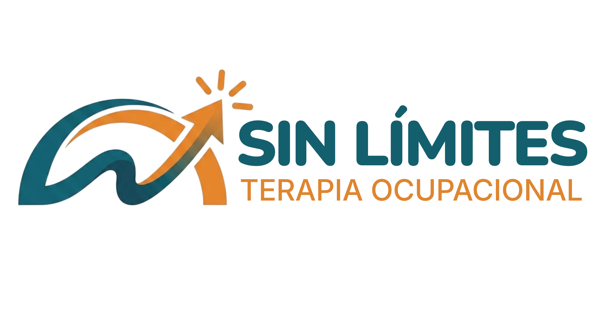

Agendar CitaSuperamos barreras juntos. Brindamos terapia ocupacional humana y personalizada para que los niños ganen confianza, mejoren sus habilidades y participen plenamente en su día a día.
Quiero más información[Coloca aquí una foto tuya trabajando con un niño]
No tienes que enfrentar estos retos a solas. Nuestro objetivo no es solo trabajar en sesiones aisladas, sino brindarte herramientas prácticas para que la paz y el equilibrio regresen a tu hogar.
Ayudamos a tu hijo a procesar mejor los estímulos de su entorno. Reducimos la ansiedad y las crisis emocionales, facilitando su adaptación en la escuela y el hogar.
Fomentamos habilidades motoras finas y gruesas para que logren ser independientes en tareas diarias como vestirse, comer, escribir y jugar con confianza.
La terapia no se queda en el consultorio. Te enseñamos estrategias sencillas para adaptar el entorno en casa y seguir estimulando el desarrollo de tu hijo naturalmente.
Soy la Lic. Claudia Ortega, y mi pasión es ver a los niños superar sus límites. Con años de experiencia en terapia ocupacional infantil, he aprendido que cada niño es único y requiere un plan trazado a su medida.
Mi compromiso es trabajar en equipo contigo. Entiendo la dinámica familiar y diseño terapias que sean efectivas para tu hijo y manejables para tu rutina diaria. Juntos, celebraremos cada pequeño gran avance.
[Espacio reservado para tu Fotografía Profesional]
"Después de meses buscando soluciones, la dedicación de Claudia le devolvió la confianza a nuestro hijo y la tranquilidad a nuestra casa. Sus consejos han sido invaluables."
Escríbenos para contarnos un poco sobre tu hijo. Agendaremos una llamada breve para entender sus necesidades y explicarte cómo podemos ayudar.
Realizamos una valoración integral y amigable del niño para identificar exactamente qué áreas requieren apoyo y estimulación.
Iniciamos las sesiones con metas claras y te brindamos acompañamiento constante para asegurar que el progreso se refleje en su día a día.